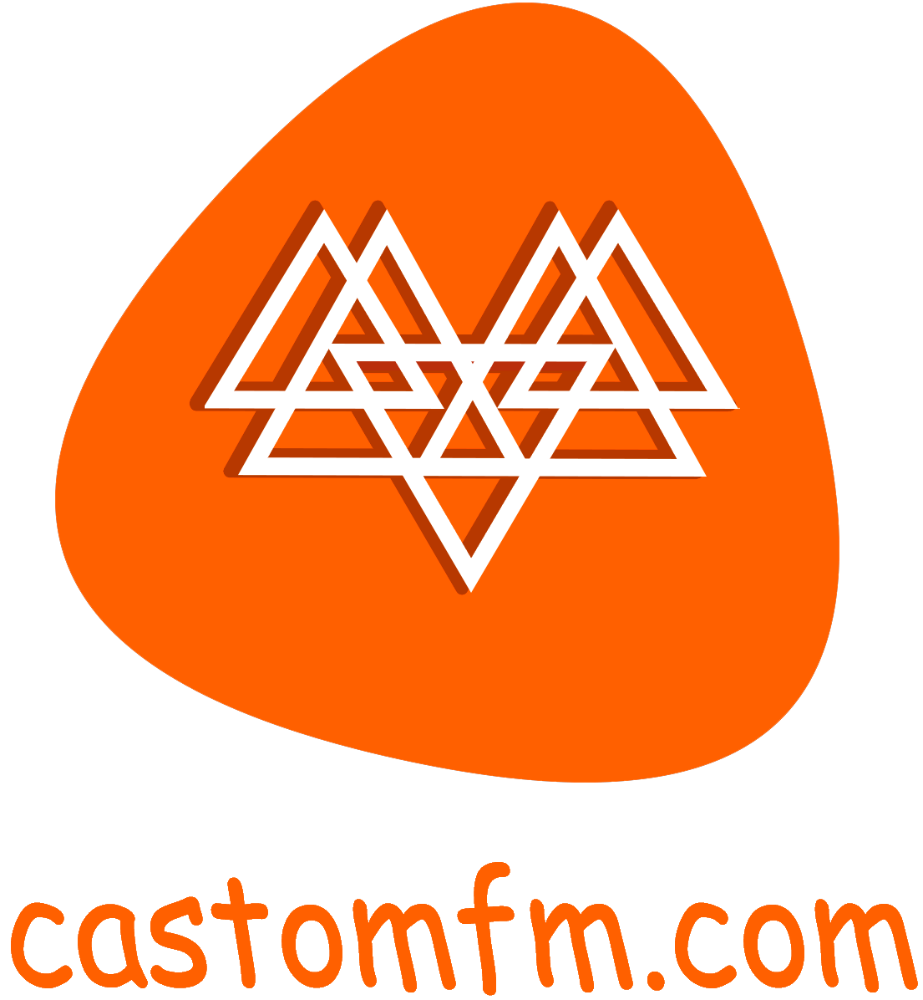

<!DOCTYPE html>
<html lang="en">
<head>
	<meta charset="UTF-8">
  <meta name='viewport' content='width=device-width,initial-scale=1'/>
  <meta content='true' name='HandheldFriendly'/>
  <meta content='width' name='MobileOptimized'/>
  <meta content='yes' name='apple-mobile-web-app-capable'/>
  <meta name="theme-color" content="#db6f0f"> <!--цвет вкладки на мобильном устройстве-->
	<!--version 5.4.1-->
<title>Castomfm.com</title><meta name="description" content="Слушать Радио онлайн. Кастомфм, бесплатно слушать любимые радиостанции Украины,зарубежья на одном сайте! бесплатно и без регистрации"> <!--Редактор тегов для поиска на Кириллице-->
      <!-- Верхний мини код для выдачи информации что на самом сайте-->
      <link rel="shourtcut icon" type="tab" href="materials/Vkladka logo/new logo.png"/><!--Доступ к модерации вкладки-->
	    <link href="styles/castomFM.css"rel="stylesheet" type="text/css"/> <!--Доступ к файлу который может менять фон сайта // файл стиля прелоадер-->
	    <meta name="google-site-verification" content="WT9x1VabOVbPVFh8goGpaNIirAyy4YTGmey2OxbHvz4" /><!--google поиск-->
      <link href="https://fonts.googleapis.com/icon?family=Material+Icons" rel="stylesheet">
</head>	
<body>
  <!-- Прелоадер -->
  <div class="preloader">
    <svg class="preloader__image" role="img" xmlns="http://www.w3.org/2000/svg" viewBox="0 0 512 512">
      <path fill="currentColor"
        d="M304 48c0 26.51-21.49 48-48 48s-48-21.49-48-48 21.49-48 48-48 48 21.49 48 48zm-48 368c-26.51 0-48 21.49-48 48s21.49 48 48 48 48-21.49 48-48-21.49-48-48-48zm208-208c-26.51 0-48 21.49-48 48s21.49 48 48 48 48-21.49 48-48-21.49-48-48-48zM96 256c0-26.51-21.49-48-48-48S0 229.49 0 256s21.49 48 48 48 48-21.49 48-48zm12.922 99.078c-26.51 0-48 21.49-48 48s21.49 48 48 48 48-21.49 48-48c0-26.509-21.491-48-48-48zm294.156 0c-26.51 0-48 21.49-48 48s21.49 48 48 48 48-21.49 48-48c0-26.509-21.49-48-48-48zM108.922 60.922c-26.51 0-48 21.49-48 48s21.49 48 48 48 48-21.49 48-48-21.491-48-48-48z">
      </path>
    </svg>
  </div>
  <!-- Основной контент страницы -->
  <script>
    window.onload = function () {
      document.body.classList.add('loaded_hiding');
      window.setTimeout(function () {
        document.body.classList.add('loaded');
        document.body.classList.remove('loaded_hiding');
      },220); // Регулеровка длительности анимации прелоудера //
    }
  </script>
</body>
</head>
<!--тест замена фона. День/Ночь-->
<div class="container">
        <div class="section gallery">
            <ul>
                <a href="#" class="themetoggle">
                    <span class="material-icons">wb_sunny</span></a></ul>
        </div>
    <script src="script.js"></script>
</script>
</div>
  <!-- тест просто добавить и закрепить один логотип -->
    <div class="block_1"></div>
    <!-- сам путь к логотипу -->
    <center>
	<a href="index.html"></a>
  <br>
    <div class="block_RADIO">
    	<div id="radiobells_container"><a href="https://castomfm.com/" rel="nofollow" id="RP_link">Онлайн радио</a> #radiobells_script_hash</div><link href="https://www.radiobells.com/script/style.css" type="text/css" rel="stylesheet" /><script type="text/javascript">var rad_backcolor="#ff6000"; var rad_logo = "white"; var rad_autoplay = false; var rad_width = "responsive"; var rad_width_px = 330;var rad_stations =[['https://online.kissfm.ua/KissFM_HD','Kiss FM Украина','kissfm'],['https://cast.brg.ua/shanson96.aacp','Радио Шансон Украина','shansonua'],['https://cast.radiogroup.com.ua/retro','Ретро FM Украина','retrofm'],['https://eapps-cs.herokuapp.com/http://vtsu.org.ua:8000/vtsu-dance','Mix FM Украина','mixfmua'],['https://online.rusradio.ua/RusRadio_HD','Русское радио Украина','rusradioua'],[' https://cast.radiogroup.com.ua/nrj','Энерджи Украина','nrjua'],['https://online.nasheradio.ua/NasheRadio_HD','Наше Радио Украина','nasheradioua'],['https://cast.brg.ua/powerfm96.aacp','Power FM Украина','powerfmua'],['https://radiosolo.ru/radio/epua/icecast.audio','Европа Плюс Украина','europaplusua'],['https://radio.bestfm.fm/bestfm_mp3','Best FM Украина','bestfmua'],['https://eapps-cs.herokuapp.com/http://cast.avtoradio.ua:8000/avtoradio','Авторадио Украина','avtoradioua'],['https://online.radioroks.ua/RadioROKS_HD','Radio Roks Украина','radiorocks'],['https://cdn.vsnw.net:8943/kyiv_fm_128k','Киев FM','kievfm'],['https://myradio24.org/1458','РАДИО СТОЛИЦА','stolica'],['https://stream.vyshka24.ru/wow','Wow Music','wowmusic'],['https://s01.radio-tochka.com:4480/radio','Радио "Dendy-Collection"','dendycollection'],['https://eapps-cs.herokuapp.com/http://radiokn.ddns.net:7000/56','Радио КН','radiokn'],['https://radio-mass.ru/izhevsk/ighevsk-radio-gorod-fm-radio-gorod-fm','Радио Город FM','gorodizhevsk'],['https://eapps-cs.herokuapp.com/http://radioenergy.lv:8000/;stream.mp3','Радио Электрон','electron'],['https://st.newradio.biz:8000/gospel','Новое Радио Gospel','newgospel'],['https://icecast-saha.cdnvideo.ru/saha','Радио Саха','sacha'],['https://radio.radioshansonplus.com:8055/radio','Шансон Плюс','shansonplus'],['https://listen6.myradio24.com/walcon','Walcon FM','walconfm'],['https://str1.rezh66.ru/zar','Белка FM','belkafm'],['https://listen.teploe.net:8001/netopfm','Теплое радио','teploeradio'],['https://ic2.christiannetcast.com/nlradio','Радио "Новая Жизнь"','novaytschizn'],['https://sea.1tvcrimea.ru:19003/stream_sea.mp3','Радио Море','radiomore'],['https://eapps-cs.herokuapp.com/http://solfm.ru:8000/online128','Соль FM','solfm'],['https://stream.teos.fm/mp3_hq','Радио ТЕОС','teos'],['https://stream.gtf.club:1125/stream','Радио Неформат','neformat'],['https://eapps-cs.herokuapp.com/http://s01.radio-tochka.com:6590/;','Радиогазета Слово','slovo'],['https://eapps-cs.herokuapp.com/http://77.239.231.74:8500/chtenie_128','Радио ЧТЕНИЕ','chtenie'],['https://myradio24.org/trollbro5','Радио Тема','tema'],['https://listen4.myradio24.com/dixi','Дикси','diksi'],['https://eapps-cs.herokuapp.com/http://radio.bignoise.club:8000/nonstop','Big Noise','bignoise'],['https://stream.zeno.fm/x5d3z62pa8zuv','Lav Kiss','lavkiss'],['https://eapps-cs.herokuapp.com/http://46.17.43.197:8000/live.mp3','Радио Апрель','aprel'],['https://a2.radioheart.ru:8066/nonstop','ЯпаРадио','yapa'],['https://top.radiosolo.ru/radio/zaoblakami_kurgan/icecast.audio','Радио За облаками','zaoblakami'],['https://eapps-cs.herokuapp.com/http://5.128.106.40:8000/stream','МОСТ','radiomost'],['https://cast.radiogroup.com.ua/jamfm320','Jam FM Украина','jamfm'],['https://myradio24.org/atamanfm','Радио Jam Украина','ataman1015'],];</script><script type="text/javascript" src="https://www.radiobells.com/script/v2_1.js" charset="UTF-8"></script>
	</center>
  <!-- "Прокрутить страницу к началу" -->
  <svg xmlns="http://www.w3.org/2000/svg" style="display: none;">
    <symbol id="arrow-up-short" viewBox="0 0 16 16">
      <path fill-rule="evenodd" d="M8 12a.5.5 0 0 0 .5-.5V5.707l2.146 2.147a.5.5 0 0 0 .708-.708l-3-3a.5.5 0 0 0-.708 0l-3 3a.5.5 0 1 0 .708.708L7.5 5.707V11.5a.5.5 0 0 0 .5.5z" />
    </symbol>
  </svg>
  <div class="btn-up btn-up_hide">
    <svg class="btn-up-icon" role="img" aria-label="Прокрутить страницу к началу">
      <use xlink:href="#arrow-up-short"></use>
    </svg>
  </div>
  <script>
    const btnUp = {
      el: document.querySelector('.btn-up'),
      scrolling: false,
      show() {
        if (this.el.classList.contains('btn-up_hide') && !this.el.classList.contains('btn-up_hiding')) {
          this.el.classList.remove('btn-up_hide');
          this.el.classList.add('btn-up_hiding');
          window.setTimeout(() => {
            this.el.classList.remove('btn-up_hiding');
          }, 300);
        }
      },
      hide() {
        if (!this.el.classList.contains('btn-up_hide') && !this.el.classList.contains('btn-up_hiding')) {
          this.el.classList.add('btn-up_hiding');
          window.setTimeout(() => {
            this.el.classList.add('btn-up_hide');
            this.el.classList.remove('btn-up_hiding');
          }, 300);
        }
      },
      addEventListener() {
        // при прокрутке окна (window)
        window.addEventListener('scroll', () => {
          const scrollY = window.scrollY || document.documentElement.scrollTop;
          if (this.scrolling && scrollY > 0) {
            return;
          }
          this.scrolling = false;
          // если пользователь прокрутил страницу более чем на 200px
          if (scrollY > 400) {
            // сделаем кнопку .btn-up видимой
            this.show();
          } else {
            // иначе скроем кнопку .btn-up
            this.hide();
          }
        });
        // при нажатии на кнопку .btn-up
        document.querySelector('.btn-up').onclick = () => {
          this.scrolling = true;
          this.hide();
          // переместиться в верхнюю часть страницы
          window.scrollTo({
            top: 0,
            left: 0,
            behavior: 'smooth'
          });
        }
      }
    }
    btnUp.addEventListener();
  </script>
  <!-- Подвал -->
  <footer>
    <div class="social">
      <br>
      <br>
        <!--<a href="https://telegram.org"></a>-->
        <a href="new version.html"></a>
        <!--<a href="donate.html">-->
        <!--<a href="https://facebook.com"></a>
        <a href="https://instagram.com"></a>-->
    </div>
    <p></p>
</footer>
</html>